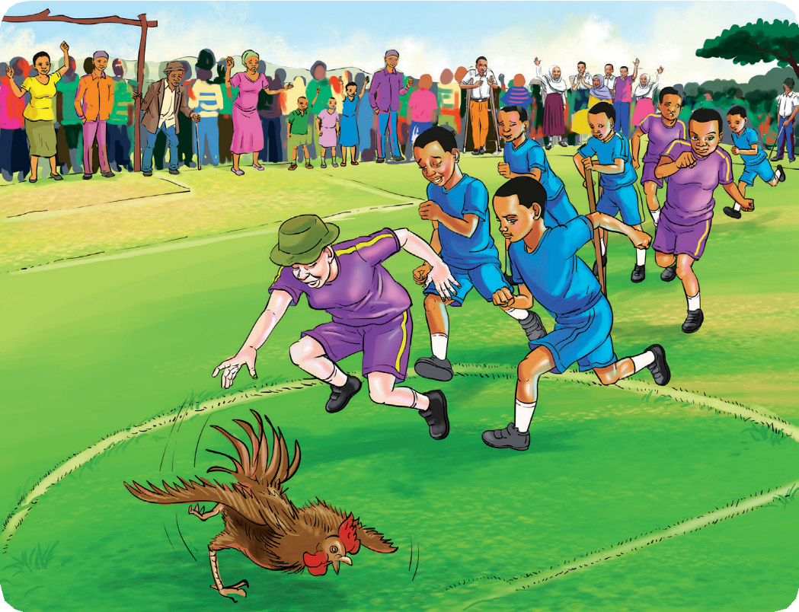

Soma habari ifuatayo, kisha jibu maswali yanayofuata.
Sisi na wao
Mimi ni Fikira. Nina marafiki wanne, Choki, Zuna, Ndina na Nito. Sisi ni wanafunzi wa Darasa la Tano katika Shule ya Msingi Idona. Tuna marafiki wengine katika Shule ya Msingi Chokoni. Wao ni Chona, Dano, Dino, Ndila na Ngau. Tulizoea kujiita “sisi” na kuwaita marafiki zetu “wao.” Nao walizoea kujiita “sisi” na kutuita sisi “wao.” Sisi na wao tunaishi vijiji jirani. Sisi tunaishi katika Kijiji cha Mkulicho. Wao wanaishi katika Kijiji cha Mkocho. Sisi na wao ni washindani wa michezo wa siku nyingi.
Wakati wa likizo ya mwezi wa kumi na mbili, tuliamua kufanya mashindano ya michezo mbalimbali. Mashindano hayo yalifanyika katika kijiji chetu. Sisi na wao tulishiriki katika mashindano hayo.
Kulikuwa na michezo mitano. Michezo hiyo ni mpira wa miguu, kukimbia, kukimbiza kuku, kuvuta kamba na kuruka kamba. Mimi nilipenda sana kukimbiza kuku na kuvuta kamba. Zuna alipenda kukimbiza kuku na kucheza mpira wa miguu. Yeye alikuwa na shauku sana ya kukimbiza kuku siku hiyo. Watu walifurika kuja kuangalia mashindano kati yetu. Miongoni mwa watu hao, alikuwepo pia babu kikongwe. Kila kikundi kiliingia uwanjani kwa mikogo. Mara, tukasikia sauti
ya babu kikongwe ikisema, “Ninyi wajukuu zangu, kumbukeni umoja ni nguvu, utengano ni udhaifu.” Sisi na wao tulianza kushindana kukimbiza kuku.

Kila kundi lilikimbiza kuku kwa ustadi mkubwa. Babu kikongwe alituangalia sana huku akitabasamu. Katika mashindano hayo, Dano ndiye aliyekuwa anakaribia kumkamata kuku. Sisi tulianza kukata tamaa. Hata hivyo, mimi nilikuwa nyuma yake. Nikasikia wenzangu wakinihimiza, “Wewe kazana! Kazana! Kazana.” Nikapata nguvu za ajabu. Nikaongeza mbio hadi nikaweza kumkamata kuku. Sisi tukaanza kushangilia kwa furaha, huku wenzangu wakinipigia makofi. Mimi nikawaambia wenzangu, “Ninyi ndinyi mmenitia moyo kwa kuniambia nikazane.” Choki, Zuna, Ndina na Nito walifurahi sana huku wakirukaruka. Wakanibeba juujuu wakisema, “Wewe umekuwa mfano wa kuigwa na unastahili pongezi.”
Baada ya hapo, mimi, Choki, Zuna, Ndina na Nito tulipumzika pembeni ya uwanja pamoja na babu kikongwe tukiongea na kufurahi. Chona, Dano, Dino, Ndila na Ngau walikuwa wamekaa pembeni wakituangalia huku wakionesha huzuni. Walikuwa hawana furaha kwa sababu hawakushinda mchezo wa kukimbiza kuku. Babu kikongwe akawaita wakaja pale tulipokaa. Babu kikongwe akawaambia, “Asiyekubali kushindwa si mshindani. Furahini tu wajukuu zangu.”
Sisi na wao tukaanza kuongea pamoja. Sisi tulibeba vyakula kama maziwa na mihogo. Wao walibeba vyakula kama mayai, viazi na nyama. Sisi tulitamani vyakula vyao na wao walitamani vyakula vyetu. Tuliamua tule chakula kwa pamoja. Mimi nilikula sana hadi nikaanza kutapika. Rafiki zangu wakanicheka